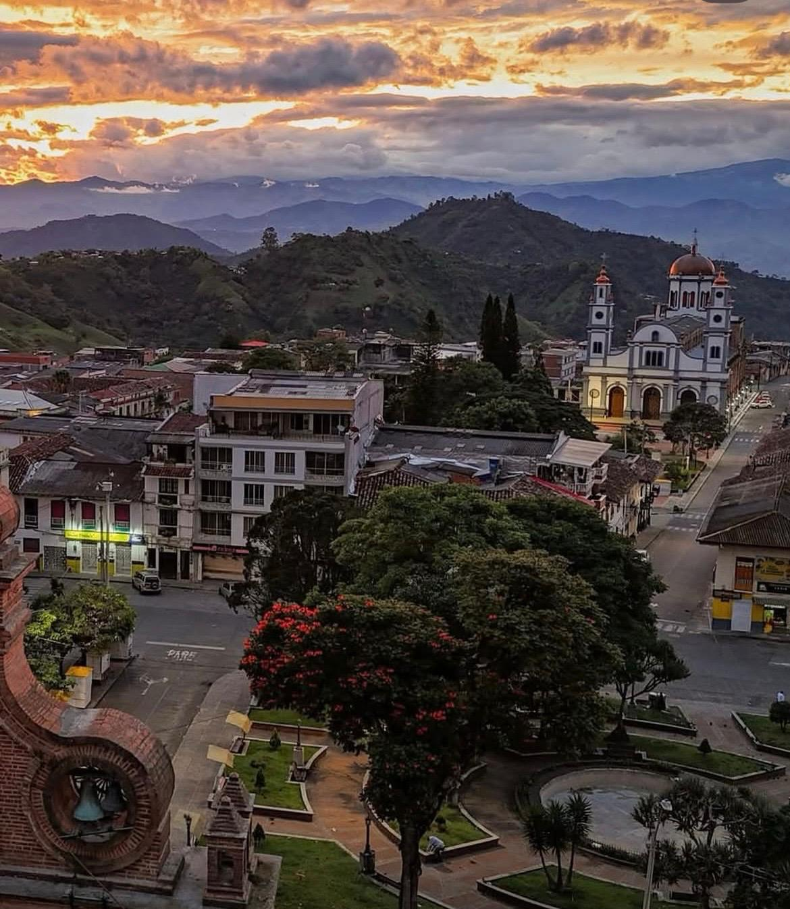
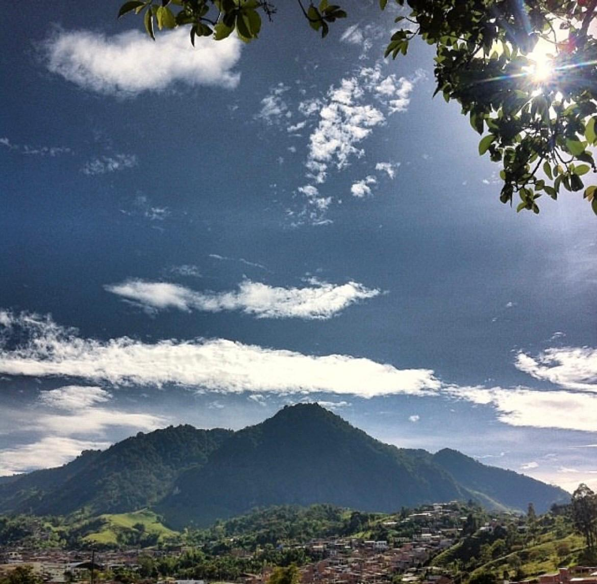
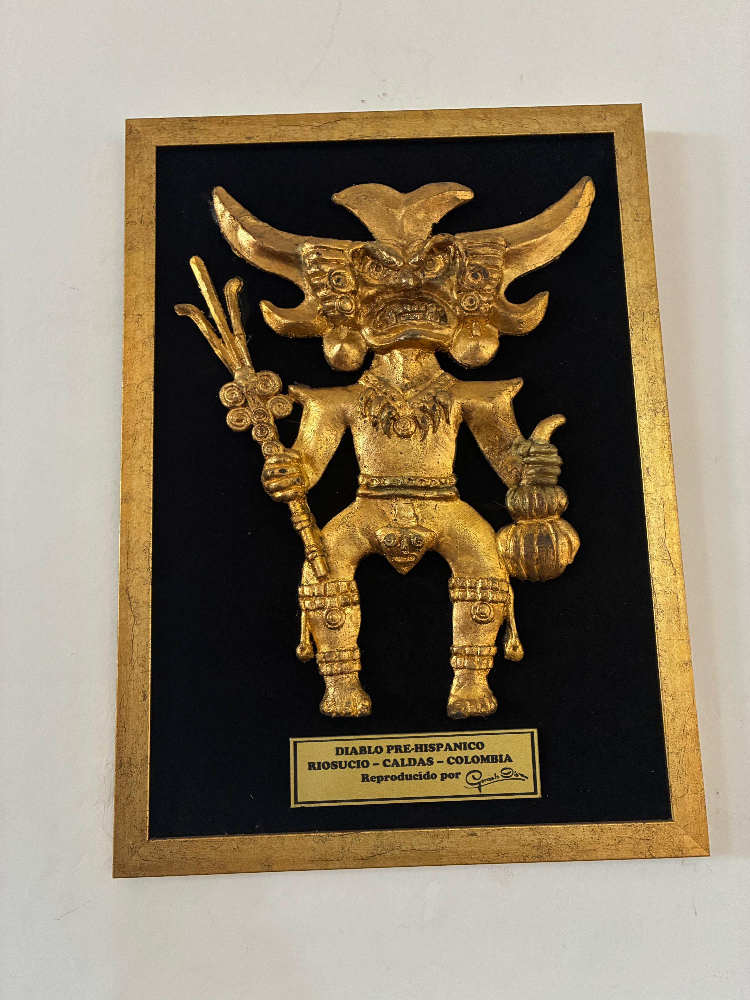

Sitios Históricos y Religiosos
Recorre los lugares que guardan la memoria histórica y espiritual de Riosucio.

Parques Principales
Los dos corazones históricos de Riosucio: "los de arriba" (San Sebastián) y "los de abajo" (La Candelaria).

Cerro Ingrumá
Sitio sagrado y ancestral para las comunidades indígenas Umbra y Embera, con senderismo y vista panorámica.

Sede del Carnaval y Café Achichavarí
Frente al parque de La Candelaria, alberga en su segundo piso el museo dedicado a la historia del Carnaval.
Aquí irá el mapa interactivo